Gallery
Photos and videos from shows, drag brunch and drag bingo, parties, collaborations and workshops by the Berlin drag collective DUCT TAPE, along with portraits of its queens.

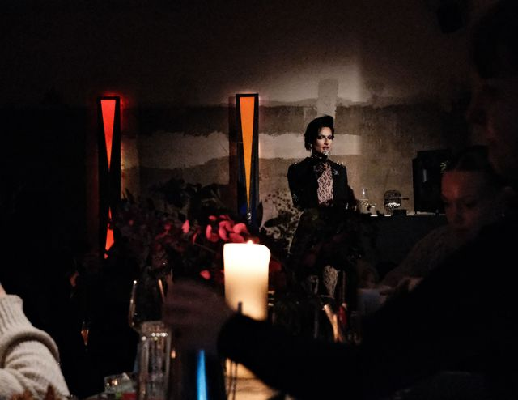


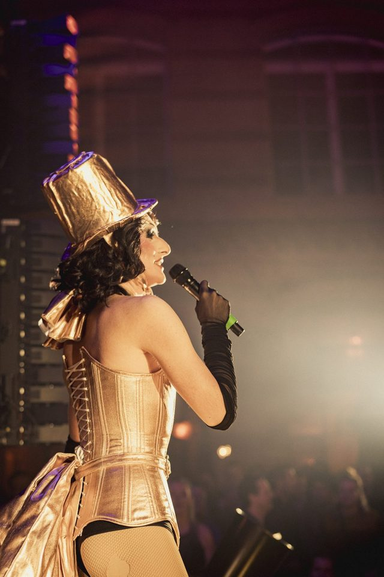


© EMI
© @iheartberlin
© nø cosmetics


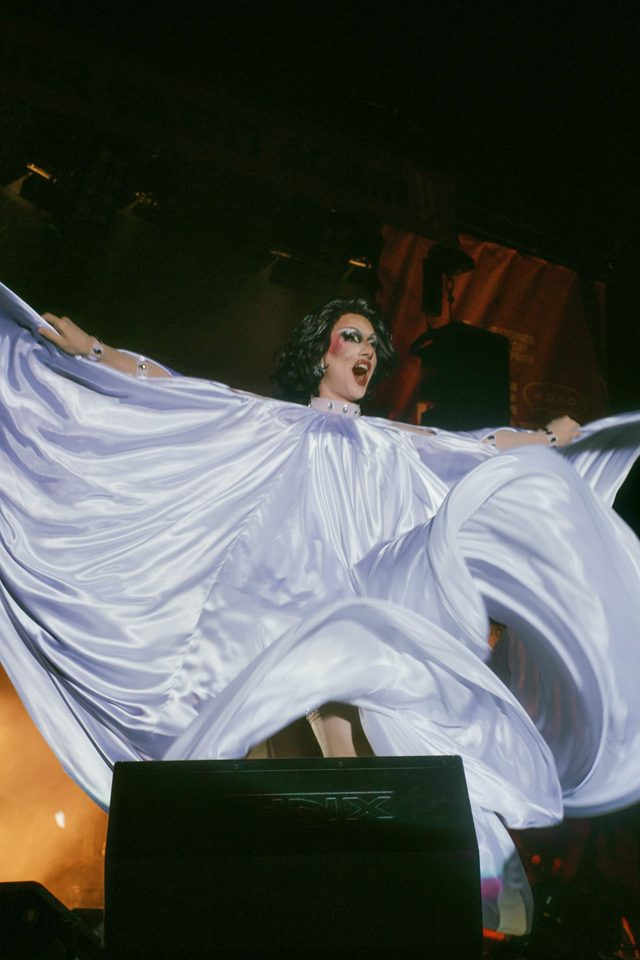


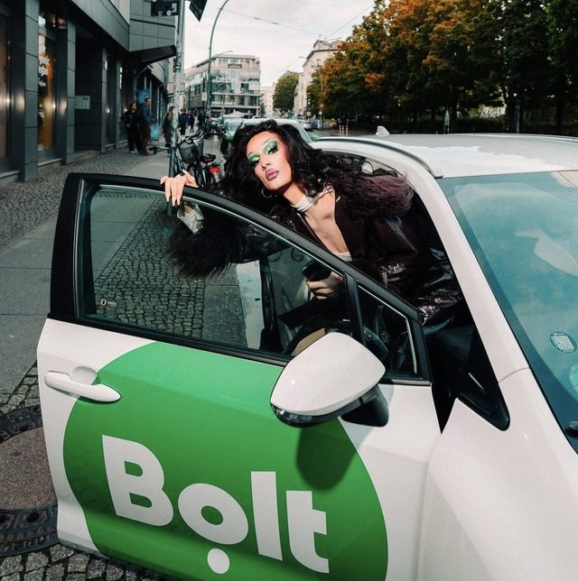


© eBay


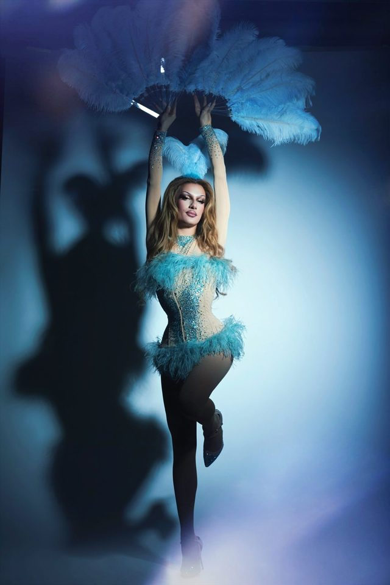


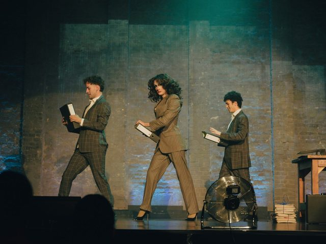


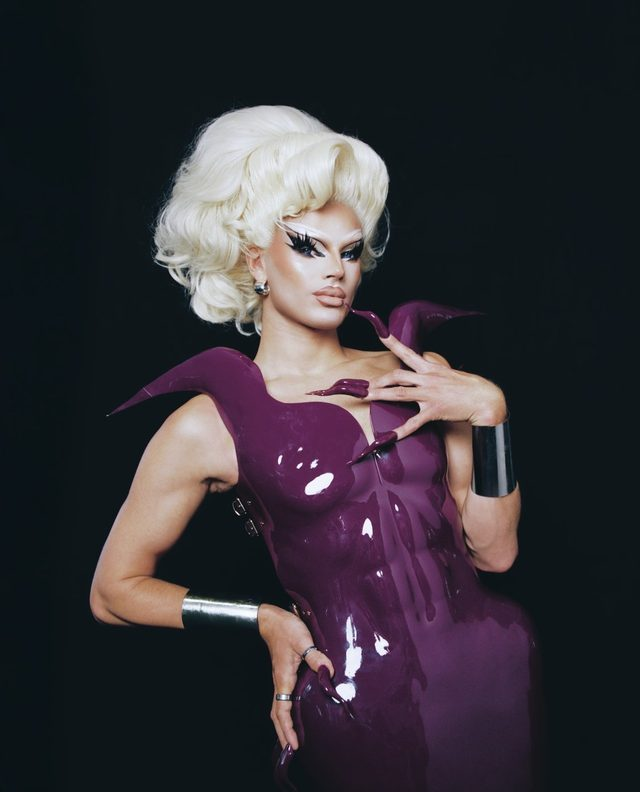


© Symba


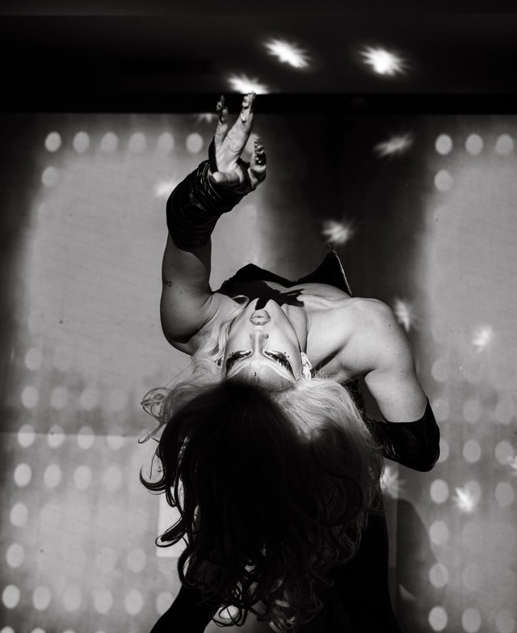

© @oluwatonilobaa


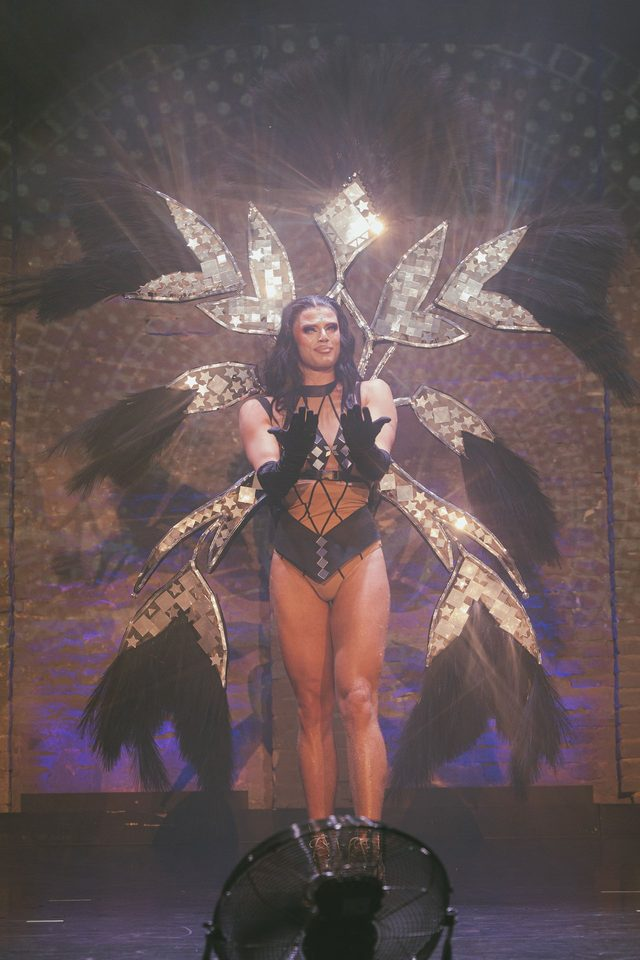


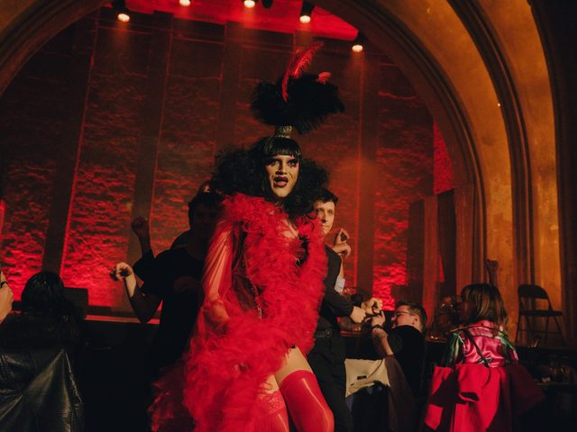


© Cheese Gang


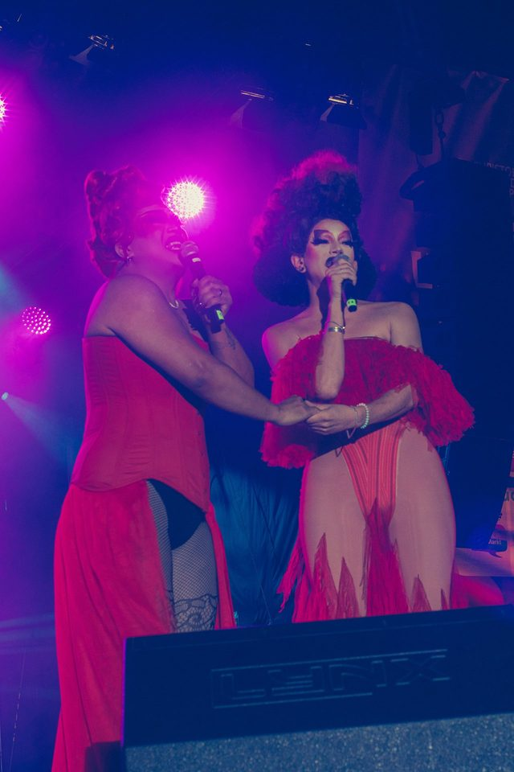


© eBay


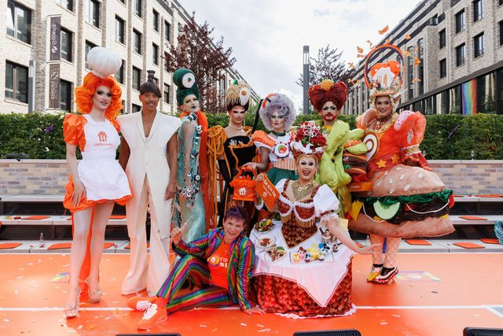

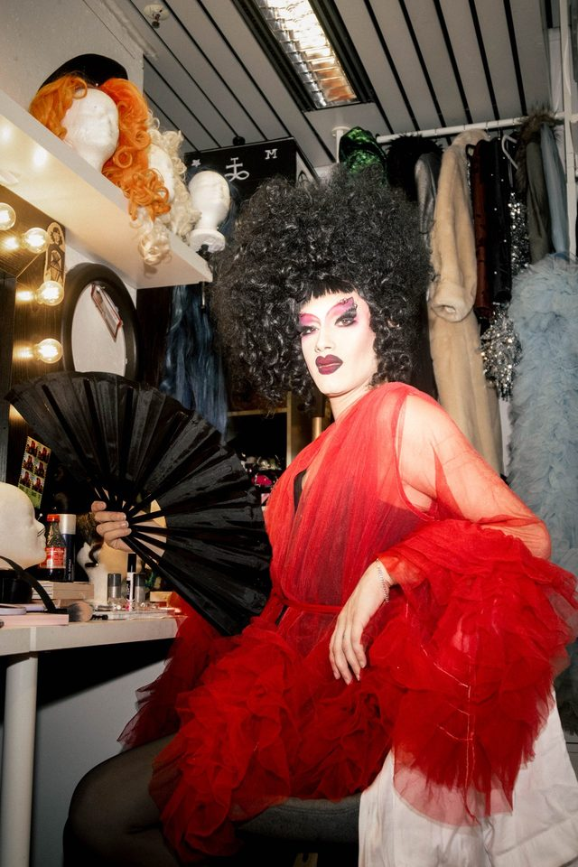


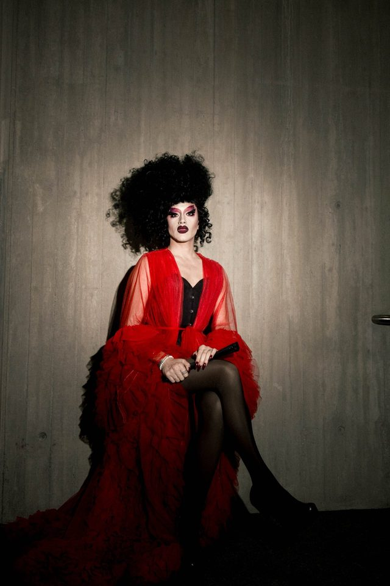


© Peter Ryku


© DUCT TAPE


© eBay


© opnarthouse


High-resolution press photos are available on request from info@ducttape.berlin.